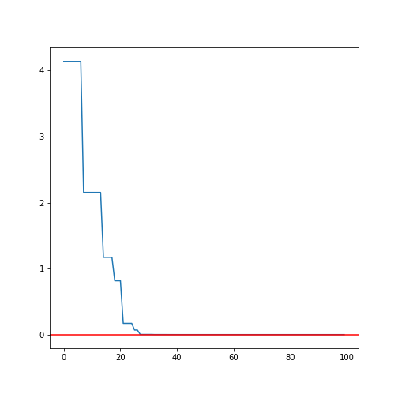
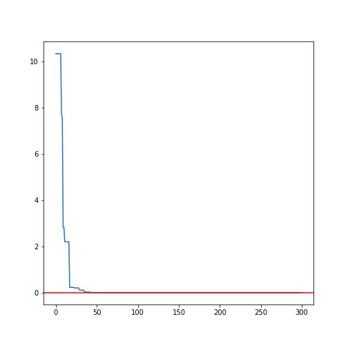

<!DOCTYPE html>
<html lang="en">
  <head>
    <meta charset="utf-8" />
    <meta name="viewport" content="width=device-width, initial-scale=1.0, maximum-scale=1.0, user-scalable=no" />

    <title>GSA Presentation</title>
    <meta property="og:title" content="GSA Presentation" />
    <meta property="og:type" content="website" />
    <meta property="og:image" content="https://alexdiazbolivar.github.io/GSAPresentation/featured-slide.jpg" />
    <meta property="og:url" content="https://alexdiazbolivar.github.io/GSAPresentation" />
    <link rel="stylesheet" href="./css/reveal.css" />
    <link rel="stylesheet" href="./css/theme/solarized.css" id="theme" />
    <link rel="stylesheet" href="./css/highlight/solarized.css" />
    <link rel="stylesheet" href="./css/print/paper.css" type="text/css" media="print" />
    <link rel="stylesheet" href="./css/style.css" />

  </head>
  <body>
    <div class="reveal">
      <div class="slides"><section ><section data-markdown><script type="text/template">

# GSA: Gravitational Search Algorithm

### An heuristic optimization method

**ISAE-SUPAERO, SDD, November 2019**

CAMACHO BOSCA Jose Ramon, DIAZ Alejandro

</script></section><section data-markdown><script type="text/template">

### GSA resume

Agents are considered as objects as their performance is measured by their masses.

- Law of gravity: Each particle attracts every other particle.<!-- .element: class="fragment" data-fragment-index="1" -->
- Law of motion: Velocity is equal to the sum of its previous velocity and the variation of the velocity. <!-- .element: class="fragment" data-fragment-index="2" -->

$$v_i^d (t+1) = rand_i v_i^d(t) + a_i^d(t)$$ <!-- .element: class="fragment" data-fragment-index="3" -->
$$x_i^d(t+1) = x_i^d(t) + v_i^d(t+1)$$ <!-- .element: class="fragment" data-fragment-index="3" -->

</script></section><section data-markdown><script type="text/template">

### Inspiration in the physical nature

Newton's second law : $a=F/M$

Newton's gravitational force: $$F = \dfrac{GM_1M_2}{R^2}$$

$G(t) = G(t_0)\left(\dfrac{t_0}{t}\right)^\beta$   $\beta<1$

$G(t_0)$ is the gravitational constant at the **first cosmic quantum-interval** of time

</script></section><section data-markdown><script type="text/template">

### Diagram de Forces:

<style>
.container{
    display: flex;
}
.col{
    flex: 1;
}
</style>

<div class="container">
<div class="col">

$$F_{if} = \dfrac{GM_{j}M_{i}}{R^2}$$
$$F_{i}^d(t) = \sum_j^{N}rand_j\dfrac{GM_{j}M_{i}}{R^2}$$
$$a_i^d(t) = \dfrac{F^d_{i}}{M_{i}}$$

</div>
<div class="col">

</div>
</div>

</script></section><section data-markdown><script type="text/template">

### Evolution of the masses

A heavier mass means a more efficient agent. Better agents have higher attractions and walk more slowly. 

$$m_i(t) = \dfrac{fit_{i}(t) - worst(t)}{best(t) - worst(t)}$$
$$M_i(t) = \dfrac{m_i(t)}{\sum_j^N m_j(t)}$$

</script></section><section data-markdown><script type="text/template">


</script></section></section><section ><section data-markdown><script type="text/template">

> Paraboloid function 
<div class="container">
<div class="col">

</div>
<div class="col">

</div>
</div>

</script></section><section data-markdown><script type="text/template">

> Rastrigin function 
<div class="container">
<div class="col">

</div>
<div class="col">

</div>
</div>

</script></section><section data-markdown><script type="text/template">

> Rosenbrock function 
<div class="container">
<div class="col">

</div>
<div class="col">

</div>
</div>

</script></section></section><section ><section data-markdown><script type="text/template">

### COMPARATION OF THE ALGORITHM 
- Extracted directly from the **paper**
> <small>GSA: A Gravitational Search Algorithm. Esmat Rashedi, Hossein Nezamabadi. University of Kerman</small>

- PSO: Particle Swarm Optimization
- GA: Genetic Algorithm 

</script></section><section data-markdown><script type="text/template">
<div class="container">
<div class="col">

</div>
<div class="col">

</div>
</div>
<small>$$F_{10}(X) = -20 exp \left(-0.2\sqrt{\dfrac{1}{n}\sum_{1}^n x_i^2}\right) - exp \left(\dfrac{1}{n}\sum{1}^n \cos (2\pi x_i)\right) + 20 + e$$</small>
<small>$$F_{12} = \dfrac{\pi}{4}\left(10\sin(\pi y_1) + \sum_{i-1}^{n-1}(y_i-1)^2(1+10\sin^2(\pi y_{i+1}))\right) + \sum_{i-1}^n u(x_i, 10, 100, 4)$$</small>

</script></section></section><section ><section data-markdown><script type="text/template">

### CONCLUSION ...

- The gravitational force is a way of transferring information between different masses.<!-- .element: class="fragment" data-fragment-index="1" -->
- A local search (e.g. gradient descent, bfgs) should be done after running the GSA <!-- .element: class="fragment" data-fragment-index="2" -->
- The results obtained by GSA in most cases provide superior results and in all cases are comparable with PSO and GA <!-- .element: class="fragment" data-fragment-index="3" -->
- Using plots with a good animation seem to be a better algorithm <!-- .element: class="fragment" data-fragment-index="4" -->

</script></section><section data-markdown><script type="text/template">


### ''le mieux est l’ennemi du bien''
<small align="right">Montesquieu</small></script></section></section></div>
    </div>

    <script src="./js/reveal.js"></script>

    <script>
      function extend() {
        var target = {};
        for (var i = 0; i < arguments.length; i++) {
          var source = arguments[i];
          for (var key in source) {
            if (source.hasOwnProperty(key)) {
              target[key] = source[key];
            }
          }
        }
        return target;
      }

      // Optional libraries used to extend on reveal.js
      var deps = [
        { src: './plugin/markdown/marked.js', condition: function() { return !!document.querySelector('[data-markdown]'); } },
        { src: './plugin/markdown/markdown.js', condition: function() { return !!document.querySelector('[data-markdown]'); } },
        { src: './plugin/highlight/highlight.js', async: true, callback: function() { hljs.initHighlightingOnLoad(); } },
        { src: './plugin/zoom-js/zoom.js', async: true },
        { src: './plugin/notes/notes.js', async: true },
        { src: './plugin/math/math.js', async: true }
      ];

      // default options to init reveal.js
      var defaultOptions = {
        controls: true,
        progress: true,
        history: true,
        center: true,
        transition: 'default', // none/fade/slide/convex/concave/zoom
        dependencies: deps
      };

      // options from URL query string
      var queryOptions = Reveal.getQueryHash() || {};

      var options = extend(defaultOptions, {"transition":"fade","transitionSpeed":"default","controls":true}, queryOptions);
    </script>


    <script>
      Reveal.initialize(options);
    </script>
  </body>
</html>
